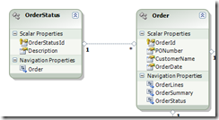

|
|
Archive for the ‘Entity Framework’ Category
Monday, September 27th, 2010
Earlier this month, I posted Entity Framework and the Repository Pattern. Mickey posted that code on GitHub, along with his own Linq to SQL implementation.
For those new to Git, here’s how you can get Mickey’s repository:
Mickey took the time to complete the story for me. I posted only enough code to make my point (which was, BTW, that the Repository Pattern takes more work than you might expect). Mikey reverse engineered the database that I used for my example, and even populated it with data from this blog. Wow!
Now let’s review his work.
Tests
 Mickey not only includes unit test (the motivation for my original post), but also integration tests. Just open the solution and hit Ctrl+R, A to run all tests. If you find that the tests don’t deploy the database file, double-click the Local.testsettings file and add the dbf to the Deployment section. I found that the tests passed before I turned on code coverage, but then I had to make this change. Mickey not only includes unit test (the motivation for my original post), but also integration tests. Just open the solution and hit Ctrl+R, A to run all tests. If you find that the tests don’t deploy the database file, double-click the Local.testsettings file and add the dbf to the Deployment section. I found that the tests passed before I turned on code coverage, but then I had to make this change.
I enabled code coverage and found that he achieves 92%-100% in all modules except for the generated code. The reason that it is not 100% is mostly due to the fact that my original tests didn’t add anything to the repository.
Two sets of data types
The goal of the original post was not persistence ignorance, it was testing. But persistence ignorance is often a reason for using the Repository Pattern. Mickey’s solution is not persistence ignorant, either.
If you look in the Data project, you will see NoteworthyEntitiesL2SModel.dbml and NoteworthyEntitiesEFModel.edmx. That is, he used both EF and L2S to generate models from the database. This created two separate sets of data types.
This division necessarily permeates the solution, since those generated data types are exposed from the repository. As a result, he has a separate memory provider for each data access technology. The EF memory provider expects ObjectContext and ObjectQuery. The L2S memory provider replaces those with DataContext and Table.
Both of the memory providers have unit tests. They distinguish between the two by namespace. EF and L2S use different strategies for naming associative tables, but other than that the code looks the same.
In practice, you will typically choose one data access technology, so this lack of persistence ignorance is not a problem. But if it bothers you, please look into POCO support for EF and L2S to see if there’s a way to remove the dependency upon the data access technology.
Thank you, Mickey
I am quite impressed with the effort that Mickey put into packaging this example and making it available to us. He took code that only worked on my machine and filled in the missing components so that we can all run the tests. And he took what was working for Entity Framework and ported it to Linq to SQL so that you have the choice. Now, either way you go, you can test your data services.
Thanks, man.
Posted in DDD, Entity Framework, Unit testing | No Comments »
Thursday, September 9th, 2010
When I’ve asked how to unit test Entity Framework, the best answer was “use the Repository pattern to encapsulate your EF code” (thanks Andrew Peters). I recently asked the same thing about RIA Services. Mike Brown responded with the same advice, even going so far as to spend a couple of hours with me on Live Meeting.
Since all you gotta do is implement the Repository Pattern, it should be easy, right? Let’s take a look at a minimalist implementation.
Inject the implementation
To support unit testing, we need to be able to swap out our implementation. At the top level, the consumer of a repository begins a unit of work. So we’ll inject a unit of work factory.
public interface IUnitOfWorkFactory
{
IUnitOfWork Begin();
}
public class NoteworthyService
{
private IUnitOfWorkFactory _unitOfWorkFactory;
public NoteworthyService(IUnitOfWorkFactory unitOfWorkFactory)
{
_unitOfWorkFactory = unitOfWorkFactory;
}
}
Identify the repository
In DDD we create one repository per aggregate root, which is the entity from which you begin the query. In EF, entities exist in a container. So we’ll take two steps to get the repository via the container.
public interface IUnitOfWork : IDisposable
{
IContainer<TContainer> UsingContainer<TContainer>()
where TContainer : ObjectContext, new();
}
public interface IContainer<TContainer> : IDisposable
{
IRepository<TEntity> GetRepository<TEntity>(Func<TContainer, ObjectQuery<TEntity>> repositorySelector)
where TEntity : EntityObject;
}
Provide a specification
The second half of the Repository Pattern is the Specification. A specification identifies which entities to pull from the repository. In Linq, we use lambdas for that. So a repository should be able to give you back some entities when given a lambda.
public interface IRepository<TEntity>
{
IQueryable<TEntity> GetSatisfying(Expression<Func<TEntity, bool>> specification);
void Add(TEntity entity);
}
Query the repository
With those interfaces in place, here’s what a query looks like.
public List<Article> GetArticlesByTopic(string topicName)
{
using (var unitOfWork = _unitOfWorkFactory.Begin())
{
return unitOfWork.UsingContainer<NoteworthyEntities>().GetRepository(container => container.Articles)
.GetSatisfying(article => article.Topics.Any(topic => topic.TopicName == topicName))
.ToList();
}
}
Implement in memory
For unit testing, we implement the repository interfaces using in-memory lists.
public class MemoryUnitOfWorkFactory : IUnitOfWorkFactory
{
private MemoryUnitOfWork _unitOfWork = new MemoryUnitOfWork();
public IUnitOfWork Begin()
{
return _unitOfWork;
}
}
public class MemoryUnitOfWork : IUnitOfWork
{
private Dictionary<Type, object> _containerByType = new Dictionary<Type, object>();
public IContainer<TContainer> UsingContainer<TContainer>()
where TContainer : ObjectContext, new()
{
object container;
if (!_containerByType.TryGetValue(typeof(TContainer), out container))
{
container = new MemoryContainer<TContainer>();
_containerByType.Add(typeof(TContainer), container);
}
return (IContainer<TContainer>)container;
}
public void Dispose()
{
}
}
public class MemoryContainer<TContainer> : IContainer<TContainer>
where TContainer : ObjectContext, new()
{
private Dictionary<Type, object> _containerByType = new Dictionary<Type, object>();
public IRepository<TEntity> GetRepository<TEntity>(Func<TContainer, ObjectQuery<TEntity>> repositorySelector)
where TEntity : EntityObject
{
object container;
if (!_containerByType.TryGetValue(typeof(TEntity), out container))
{
container = new MemoryRepository<TEntity>();
_containerByType.Add(typeof(TEntity), container);
}
return (IRepository<TEntity>)container;
}
public void Dispose()
{
}
}
public class MemoryRepository<TEntity> : IRepository<TEntity>
where TEntity : EntityObject
{
private List<TEntity> _entities = new List<TEntity>();
public IQueryable<TEntity> GetSatisfying(Expression<Func<TEntity, bool>> specification)
{
return _entities.Where(specification.Compile()).AsQueryable();
}
public void Add(TEntity entity)
{
_entities.Add(entity);
}
}
And here’s what a unit test looks like.
[TestClass]
public class NoteworthyServiceTest
{
private NoteworthyService _noteworthyService;
[TestInitialize]
public void Initialize()
{
IUnitOfWorkFactory memory = new MemoryUnitOfWorkFactory();
IRepository<Article> articlesRepository = memory.Begin()
.UsingContainer<NoteworthyEntities>()
.GetRepository(container => container.Articles);
Topic ddd = new Topic()
{
TopicName = "ddd"
};
Topic corresopndence = new Topic()
{
TopicName = "correspondence"
};
Article efRepository = new Article()
{
Title = "Entity Framework and the Repository Pattern"
};
efRepository.Topics.Add(ddd);
Article correspondenceLaunch = new Article()
{
Title = "Correspondence Launch"
};
correspondenceLaunch.Topics.Add(corresopndence);
Article correspondenceDDD = new Article()
{
Title = "Correspondence and DDD"
};
correspondenceDDD.Topics.Add(ddd);
correspondenceDDD.Topics.Add(corresopndence);
articlesRepository.Add(efRepository);
articlesRepository.Add(correspondenceLaunch);
articlesRepository.Add(correspondenceDDD);
_noteworthyService = new NoteworthyService(memory);
}
[TestMethod]
public void QueryReturnsArticles()
{
var articles = _noteworthyService.GetArticlesByTopic("ddd").ToArray();
Assert.AreEqual("Entity Framework and the Repository Pattern", articles[0].Title);
Assert.AreEqual("Correspondence and DDD", articles[1].Title);
}
}
Implement with Entity Framework
Finally, we implement the real thing using Entity Framework.
public class EntityFrameworkUnitOfWorkFactory : IUnitOfWorkFactory
{
public IUnitOfWork Begin()
{
return new EntityFrameworkUnitOfWork();
}
}
public class EntityFrameworkUnitOfWork : IUnitOfWork
{
private Dictionary<Type, IDisposable> _containerByType = new Dictionary<Type, IDisposable>();
public IContainer<TContainer> UsingContainer<TContainer>()
where TContainer : ObjectContext, new()
{
IDisposable container;
if (!_containerByType.TryGetValue(typeof(TContainer), out container))
{
container = new EntityFrameworkContainer<TContainer>();
_containerByType.Add(typeof(TContainer), container);
}
return (IContainer<TContainer>)container;
}
public void Dispose()
{
foreach (var container in _containerByType.Values)
container.Dispose();
}
}
public class EntityFrameworkContainer<TContainer> : IContainer<TContainer>
where TContainer : ObjectContext, new()
{
private TContainer _container;
public EntityFrameworkContainer()
{
_container = new TContainer();
}
public IRepository<TEntity> GetRepository<TEntity>(Func<TContainer, ObjectQuery<TEntity>> repositorySelector)
where TEntity : EntityObject
{
return new EntityFrameworkRepository<TContainer, TEntity>(_container, repositorySelector(_container));
}
public void Dispose()
{
_container.Dispose();
}
}
public class EntityFrameworkRepository<TContainer, TEntity> : IRepository<TEntity>
where TContainer : ObjectContext, new()
where TEntity : EntityObject
{
private TContainer _container;
private ObjectQuery<TEntity> _objectQuery;
public EntityFrameworkRepository(TContainer container, ObjectQuery<TEntity> objectQuery)
{
_container = container;
_objectQuery = objectQuery;
}
public IQueryable<TEntity> GetSatisfying(Expression<Func<TEntity, bool>> specification)
{
return _objectQuery.Where(specification);
}
public void Add(TEntity entity)
{
_container.AddObject(_objectQuery.Name, entity);
}
}
Analysis
This is the smallest implementation of the Repository pattern that I could come up with. It is obviously not feature complete. For example, it does not implement Delete, nor does it allow you to specify eager loading with Include. There are other implementations that are bigger, but I doubt that there could be one smaller. Even at this size, this doesn’t qualify as “all you need to do is”.
One benefit of the Repository pattern is supposed to be that it abstracts the persistence mechanism. But this implementation returns EntityObjects, which are a distinctly Entity Framework-ish data type. I could try for a POCO compliant implementation to solve that problem.
Because this implementation requires EntityObjects, it could never work with RIA Services. I would have to write a different Repository implementation to unit test my client code.
And finally, Entity Framework does some things that the in-memory repository does not. My unit tests can’t verify that I’m using EF correctly. For example, Entity Framework does eager loading if I explicitly request it. The in-memory implementation always has all navigation properties populated. Because of this difference, I can’t verify with a unit test that I have included all of the required navigations.
Conclusion
All of this leads me to conclude that the Repository pattern is not the best way to add testability to an untestable framework. The framework needs to be testable from the beginning. If Entity Framework had provided an in-memory implementation for testing, then I could test my use of EF, including eager loading.
By the way, Correspondence does in fact provide an in-memory implementation for unit testing. Please go through the lessons to see what I think a testable framework should look like.
Posted in DDD, Entity Framework, Unit testing | 6 Comments »
Monday, January 18th, 2010
The sum of an empty set is zero. This is a well-known mathematical truth that the .NET Framework understands.
int sum = Enumerable.Empty<int>().Sum();
Assert.AreEqual(0, sum);
Entity Framework 1.0, however, doesn’t work like that. If you try to sum an empty set, it will throw an exception.
OrderEntities entities = new OrderEntities();
int totalQuantity = entities.OrderLine
.Where(orderLine => false)
.Sum(orderLine => orderLine.Quantity);
Assert.AreEqual(0, totalQuantity);
System.InvalidOperationException: The cast to value type 'Int32' failed because the materialized value is null. Either the result type's generic parameter or the query must use a nullable type.
Here’s my solution
Let Sum return a nullable integer. Then, if it is null, coerce it back to zero.
OrderEntities entities = new OrderEntities();
int totalQuantity = entities.OrderLine
.Where(orderLine => false)
.Sum(orderLine => (int?)orderLine.Quantity) ?? 0;
Assert.AreEqual(0, totalQuantity);
You know that Quantity cannot be null. I know that Quantity cannot be null. But we have to trick Entity Framework into thinking that it could be null. By casting the integer to int?, you select the Sum overload that allows for a null. Since Entity Framework doesn’t do the right thing with that null, then we’ll do it ourselves.
Posted in Entity Framework | 4 Comments »
Monday, March 16th, 2009
 I am tracking the status of an order in an eCommerce system. In the database, I have a table called OrderStatus that lists all of the statuses that an order can be in. Lookup table like this are useful for populating combo-boxes and running reports. And a foreign key constraint on the status column ensures the status of each order is within the set.
But within code, the lookup table is not necessary. I created an enumeration for the status values. The IDs were well-known. I didn't care about the descriptions.
I brought both the Order entity and the OrderStatus entity into the EDMX. The Order entity so I could create orders, and the OrderStatus entity to populate a combo-box. Since the Order table has a foreign key constraint relating it to OrderStatus, Entity Framework created a relationship. This caused problems.
When inserting an Order, I needed to set its status. So I created an OrderStatus and set its ID:
order.OrderStatus = new OrderStatus() { OrderStatusId = OrderStatusEnum.Submitted };
Entity Framework did not see this as setting the foreign key. Instead, it saw this as inserting both an Order and an OrderStatus. The result was a uniqueness constraint violation. The correct way to do this is to query for the existing order status, and then set the reference in the new order.
OrderContainer container = new OrderContainer();
order.OrderStatus =
container.OrderStatus
.Where(s => s.OrderStatusId == (byte)OrderStatusEnum.Submitted)
.First();
That just seems like too much work to set a foreign key in a row that I'm inserting. I decided instead to delete the relationship that EF had created between Order and OrderStatus. Upon doing so, I received this error validating the model.
Foreign key constraint 'FK_Order_OrderStatus' from table Orders (OrderStatusId) to table OrderStatus (OrderStatusId):: Insufficient mapping: Foreign key must be mapped to some AssociationSet on the conceptual side.
Entity Framework had pulled the foreign key constraint in from the database schema, and it needed to be mapped. I just deleted the association on the "conceptual side" (i.e. the EDMX designer surface) that represented that constraint.
Here's my solution
I actually have three. First, I could go back to my database and delete the foreign key constraint. This would make EF happy, but it would also remove the extra check on order status. It would take away some information that could be used by reporting tools. The foreign key constraint is the correct model, relationally, and I did not want to violate that model to satisfy EF. So I didn't do it.
Next, I could move OrderStatus to its own EDMX. I took this approach on other parts of the system that had several lookup tables, creating one single Lookup.EDMX file for all of them. This would prevent EF from importing the related tables in the same context, and would prevent it from creating the relationship. This seemed a bit much in this case, since I didn't have any other lookups, so I didn't do it.
Finally, I could remove the imported foreign key constraint. This requires hand-editing the XML, since the model browser doesn't allow you to delete any of the constraints that it has imported. To edit the XML, right-click on the EDMX file in solution explorer, select "Open With..." and then "XML Editor".
Find the AssociationSet element that refers to the foreign key that's giving you trouble. I deleted this chunk of XML:
<AssociationSet Name="FK_Order_OrderStatus" Association="Order.Store.FK_Order_OrderStatus">
<End Role="OrderStatus" EntitySet="OrderStatus" />
<End Role="Orders" EntitySet="Orders" />
</AssociationSet>
After cleaning that up, my EDMX validated again. Finally, to set the foreign key myself, I added a scalar property and mapped it to the column in the table.
This is another case of the tool trying too hard to help you out. It can't tell based on the relational model that this is a lookup table, and that it is not supposed to insert rows. Entity Framework tries very hard to keep you from managing foreign keys yourself. But the database is relational, and you do need to know about constraints and foreign keys. You have to be incredibly forceful to get the tool to move out of your way and let you see the model as it truly is.
Posted in Databases, Entity Framework | 4 Comments »
Thursday, March 12th, 2009
Entity Framework does not understand the difference between independent and dependent data.
 We have in our schema a table containing orders, and another table containing order lines. We have a web page that shows a filtered list of orders. This page can be filtered and sorted according to several properties of the order, including total. Total is a dependent property, calculated from the order lines. We have in our schema a table containing orders, and another table containing order lines. We have a web page that shows a filtered list of orders. This page can be filtered and sorted according to several properties of the order, including total. Total is a dependent property, calculated from the order lines.
To accomplish this filtering and sorting in the database, we've created an order summary view. This view aggregates properties of an order that depend upon its lines. The order and order line tables represent independent data -- they can be changed -- while the order summary view represents dependent data -- its behavior depends upon other objects.
We've modeled this in Entity Framework in the picture to the right. An order has many order lines. An order is also associated with one order summary. We can write queries for orders based on properties of order summary. This works.
Insert fails
The problem happens when we insert an order. Because the order is in one-to-one association with an order summary, Entity Framework wants us to create an OrderSummary object at the same time.
Entities in 'OrderContainer.Order' participate in the 'OrderOrderSummary' relationship. 0 related 'OrderSummary' were found. 1 'OrderSummary' is expected.
Entity Framework does not understand that the OrderSummary view is dependent upon the Order table. When I insert into Order, the database calculates an OrderSummary. It thinks that OrderSummary is independent -- that I have to insert it myself.
Here's my bad solution
I changed multiplicity of the OrderSummary end from "One" to "Zero or One". This tells Entity Framework that the OrderSummary relationship is not required. Unfortunately, this is not the correct model. There always will be an order summary. If there is an order, the view will contain a row for it. One-to-one is not just a requirement, it is a promise. If the model only claims one-to-zero or one, then this promise is not expressed.
When making this change, the following error appeared briefly:
The multiplicity 'ZeroOrOne' on End 'OrderSummary' in the conceptual side Association 'Order.OrderOrderSummary' doesn't match with multiplicity 'One' on end 'OrderSummary' on the object side Association 'Order.OrderOrderSummary'.
I don't recall when it went away, but I went through a few gyrations of saving, closing, reopening, refreshing, and shaking the box. This particular relationship was not generated from the database. How could it have been, since views don't have foreign key constraints. There should be no "conceptual side" to get out of sync, but there must have been something in the EDMX that thought differently.
A better solution
I would prefer to tell EF that OrderSummary is dependent. It should know that I never have to insert it, update it, or delete it. Independent data can be changed. Dependent data cannot.
Since that is not possible, I am considering moving the dependent fields from OrderSummary into Order itself. I may do this with a multi-table mapping (actually, one table and one view). Or I may expose all of the Order columns in the OrderSummary view and just bind Order to this view.
Or I may skip the OrderSummary view altogether and see if I can express the total in linq. If linq can generate the appropriate aggregate, sort by it, and filter by it, then the view would not even be necessary. In this case, at least. We'll see.
Posted in Databases, Entity Framework | No Comments »
Thursday, March 5th, 2009
We're using Entity Framework for data access on an enterprise system. It has been painful, but we've gradually learned how to use the product. This last problem was our fault, but we blamed the tool.
The situation is that we have Orders with OrderLines. We want to find all orders that include a particular item. From those orders, we want to get information from a related entity called OrderSummary.
We tried several approaches until we found a syntax that would compile and give us the right set of orders. What we ended up with was a linq query using two "from" clauses:
OrderContainer container = new OrderContainer();
var source = container.Orders.Include("OrderSummary");
var orders =
from o in source
from ol in o.OrderLines
where ol.ItemId == "32180"
select o;
This query returns the correct set of orders, but the OrderSummary navigation property is not loaded. We called it a bug in EF and worked around it. The workaround involved multiple queries, and was generally a bad idea.
Fortunately, we took the time to revisit the problem. The first thing I did was to use Reflector to find out what that query was actually doing. Here's the equivalent:
var orders = source
.SelectMany(o => o.OrderLines, (o, ol) => new { order = o, orderLine = ol })
.Where(result => result.orderLine.ItemId == "32180")
.Select(result => result.order);
It's a round-about way of saying it, but it looks OK. It creates a tuple of orders and order lines, filters that tuple based on the item ID, then selects just the order part of the tuple. If you think about it relationally, this is pretty close to an old-fashioned WHERE join.
Keeping with the explicit syntax, I wrote the query exactly as I wanted it. This is the result:
var orders = source
.Where(o => o.OrderLines
.Any(ol => ol.ItemId == "32180"));
This reads like the specification. It gets all orders where any order line has the desired item ID.
This version of the code not only selects exactly the orders I want, it also includes the OrderSummary. No longer do I have to do additional queries to fill in the missing details.
Here's my solution
My advice after working through this problem is to skip the linq syntax. Get used to the more explicit extension method syntax. Understand .Where(), .Select(), and .Any(). When you are more explicit with your tools (and I'm not talking profanity here), you have a better chance of getting the behavior you want out of them.
Posted in C#, Entity Framework | No Comments »
Monday, March 2nd, 2009
I am not a signatory of the Entity Framework Vote of No Confidence. Not because I have any confidence in the tool, but rather because my concerns are different. The concerns expressed in the VoNC are:
- Focus on data over behavior
- Lack of lazy loading
- Shared canonical model
- Lack of persistence ignorance
- Excessive merge conflicts
These are valid concerns coming mostly from a community that uses ORM tools. I am not an ORM advocate, so some of these concerns mean little to me. In particular, persistence ignorance, while a cornerstone of ORM culture, has been of limited value in my experience. I've never had the need to port a data model unchanged into a different database. The database always imposes its constraints on the domain model. (Or maybe I just don't understand what PI really means.)
My concerns, on the other hand, are born out of trying to use EF on an enterprise project. My team has settled on a way of using it that works for us, so we will continue to use it. The problems that we've had to overcome are:
- Tight coupling to the database schema
- Lack of versioning support
- Lack of visibility
- Confusion between ownership and association
Tight coupling to the database schema
The easiest way to create an entity model is to reverse-engineer it from the database. The tool will create an entity type for each table that you select, and a relationship for each foreign key. It will even turn a two-column associative table into a many-to-many relationship. For simple schemas, this works pretty well.
There are many problems with taking this approach, however. The first is that foreign keys are only properties of tables, not views. The import creates an entity for each selected view, but cannot create relationships. Relationships can be created manually, so this is easily overcome. However this shortcoming encourages the use of tables over views, removing one useful layer of indirection.
We will reverse-engineer up to a point, then switch to views under the covers. Once that switch is made, we no longer refresh the EDMX from the model. This practice retains the layer of abstraction that we gain from views, but doesn't completely defeat the usefulness of the tool.
Lack of versioning support
We are building a service-oriented application. There are problems with SOA that I won't get into right now, but the biggest problem has been breaking changes in the service contract.
Entity Framework adds the [DataContract] attribute to all of the entities. This allows you to return an entity from a WCF service. If Microsoft made it this easy, it must the right thing to do, right?
The problem is that there is just one version of each entity type, and therefore of each service signature. If someone adds a column to a table, the client proxy needs to be regenerated. Every change to the database schema is a breaking change to the clients. And there is no way to keep old versions of the service calls while simultaneously adding new versions. This is painful in development. This would be death to production.
The solution is to ignore the help that Microsoft gives you. Don't use EF entities in WCF service contracts. Yes, this means that you have to write left-hand-right-hand code, but at least it's completely under your control. You choose when to define new data types, and you can version them according to your own needs.
Lack of visibility
We have some talented DBAs on the team. They are the reason that I'm not much of an ORM advocate. I see the job that they do, and I don't want my developers to be responsible for it. They think about the health and design of the data. Every day. If you use an ORM, you either ask your developers to be just as concerned, or you get accidental data access. Frankly, my developers have too much to think about without also caring as deeply about the data as my DBAs do.
So since I lean so heavily upon my DBAs, I want to give them all of the information they need. One thing they ask for is a list of queries that the application will be performing. They need this in order to ensure that the tables are properly indexed. Extracting this information from EF is cumbersome. The best way I've discovered is to run SQL Profiler and start the integration tests.
Another thing they ask for is a list of tables and views that a particular build of the application requires. They need this to coordinate database releases with application releases. We don't bring down the whole datacenter in order to release. Database changes are rolled out on a live system in advance of application changes. They are applied in a way that will not break the previous application. Then, when the database is upgraded, the app servers are individually taken off-line and upgraded. During this process, there is zero down-time. Part of the datacenter is on the previous version, while the other part is on the new version. Entity Framework hides the dependency of code upon schema, and gives us absolutely no help in planning for this dance.
Confusion between ownership and association
I observe five axioms of software behavior. One of them is ownership. An object has exactly one owner. It's a parent-child relationship. If the child is removed from the parent, it is deleted.
Ownership is different from association. An association is just a reference. That reference can be changed without deleting the object.
In a relational database, ownership is manifested as a foreign key that you cannot change. A child is added to a parent when it is inserted, and removed when it is deleted. A one-to-one or one-to-many association is also a foreign key, but you are allowed to change it. A many-to-many association is represented as an associative table.
Entity Framework only has navigation properties. It makes no distinction between ownership and association. In fact, it treats all navigation properties as associations, and does not do the right thing with parent-child relationships. Removing an object from a navigation property does not delete it, even if the parent is supposed to be the owner. Instead, it throws this exception:
A relationship is being added or deleted from an AssociationSet '***'. With cardinality constraints, a corresponding '***' must also be added or deleted.
You have to delete the child object from the container, not from its owner.
The way you code with objects is different than the way you code with relational databases. Entity Framework tries to hide these differences behind a layer of abstraction, but it fails completely. Not being an ORM user, I don't know the extent to which other frameworks succeed. But when I'm working with a relational database, I prefer to code relationally. It's really not that bad.
So when using Entity Framework in an enterprise environment:
- Don't completely rely upon reverse-engineering the model.
- Don't expose entities through WCF services.
- Use SQL Profiler to see what EF is doing.
- Know the difference between ownership and association, even if the tool doesn't.
Posted in Databases, Entity Framework | No Comments »
|

 Mickey not only includes unit test (the motivation for my original post), but also integration tests. Just open the solution and hit Ctrl+R, A to run all tests. If you find that the tests don’t deploy the database file, double-click the Local.testsettings file and add the dbf to the Deployment section. I found that the tests passed before I turned on code coverage, but then I had to make this change.
Mickey not only includes unit test (the motivation for my original post), but also integration tests. Just open the solution and hit Ctrl+R, A to run all tests. If you find that the tests don’t deploy the database file, double-click the Local.testsettings file and add the dbf to the Deployment section. I found that the tests passed before I turned on code coverage, but then I had to make this change.
{kind=link}